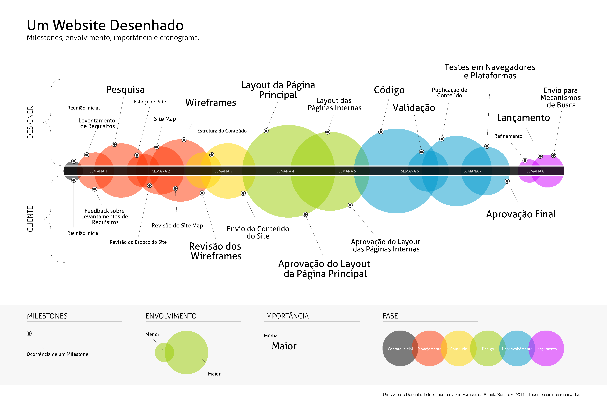

A imagem abaixo está inserida no html, em forma de CONTEÚDO acessível pelo usuário.
Conteúdo versus Background
A imagem abaixo está inserida no css, através da propriedade de imagem de fundo (background-image) e não fica acessível para o usuário comum.
IMAGEM DE BACKGROUND
Abaixo, o próprio arquivo .pdf foi inserido no html, através do elemento 'embed'.